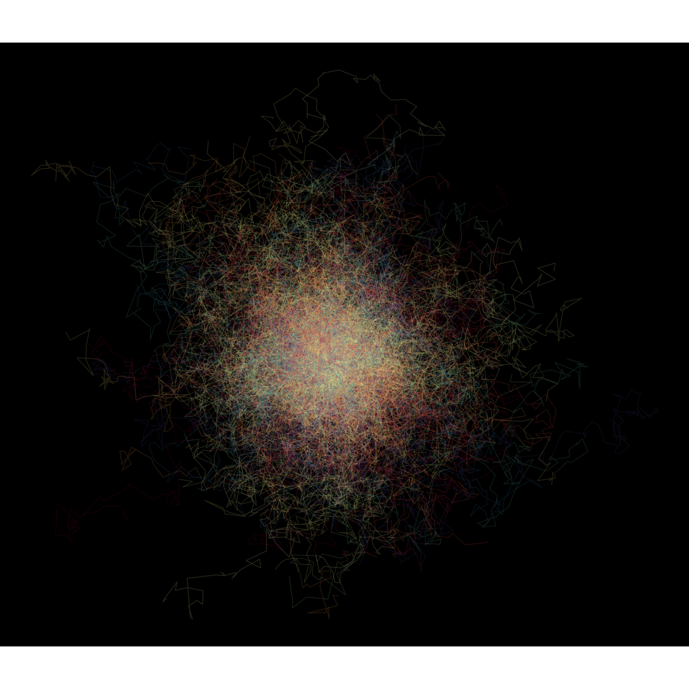
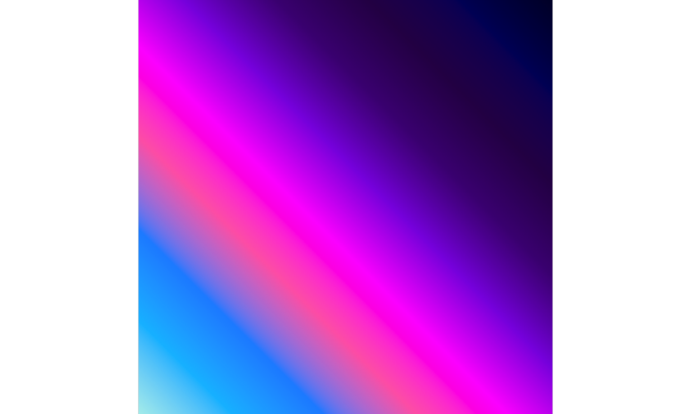

Lab 9: Art Gallery
Introduction
This document presents two pieces of generative art created in R, fulfilling the requirements for Lab 9. Each piece includes a title, a museum-style description, and an explanation of the code choices that influenced its appearance.
Art Piece 1: Ordered Chaos
(Made using ordinary plotting functions on data)
Title: Whispers from the Algorithmic Muse
Museum-Style Description: “This piece, Whispers from the Algorithmic Muse, captures the inherent tension between order and chaos that governs complex systems. Each luminous trajectory, born from a simple generative rule, embarks on a journey of apparent randomness. Yet, from this multitude of individual paths, a collective, almost organic structure emerges. The artist invites the viewer to contemplate the unseen algorithms that shape our world, from the flocking of birds to the ebb and flow of digital information. It is a meditation on emergence, where simplicity begets profound complexity, and data points transform into ethereal dance.”
Description of the Code Choices and How They Influenced the Appearance: * Data Generation: The piece uses data generated from 500 2D random walks. Each walk starts from the center of the canvas (0,0) and takes 100 steps. The step for each walk is generated using rnorm() for both x and y increments with a standard deviation of 0.1, ensuring a degree of unpredictability in their paths. * Plotting with ggplot2: The ggplot2 package is the primary tool. * geom_path(): Each random walk is rendered as a separate path. “By using geom_path for each of the 500 random walks, we trace the journey of each data series as a continuous line, creating the filamentous structure.” The linewidth is set to 0.3 for thin lines. * Aesthetics & Color: * alpha (transparency): Each path is drawn with alpha = 0.15. “Setting a low alpha value for the paths allows their overlaps to create areas of greater density and visual weight, highlighting regions where many paths converge or cross.” * color: The color of each line is mapped to its walk_id using factor(walk_id). A repeating spectral palette from RColorBrewer (brewer.pal(11, "Spectral")) is used. “By mapping the color aesthetic to the unique ID of each random walk using a repeating spectral palette, a vibrant differentiation between lines is achieved, preventing a monotonous visual and adding depth.” * Theme and Axes: * theme_void(): This theme is used to remove axes, gridlines, and most background elements. “Employing theme_void() strips the canvas of traditional chart elements, focusing the viewer’s attention entirely on the artistic form of the data itself.” * plot.background = element_rect(fill = "black", color = "black"): The plot background is set to black to make the colored lines stand out. * coord_fixed(): This ensures that the aspect ratio is maintained, so the random walks spread evenly in all directions. “Using coord_fixed() maintains a 1:1 aspect ratio, preventing distortion and ensuring the ‘explosion’ of lines feels symmetrical and balanced in its spread.” * legend.position = "none": The legend is hidden to maintain a clean, artistic look.
Art Piece 2: Generative
(Completely generative, inspired by workshop techniques)

Title: Nocturne in Perlin Minor
Museum-Style Description: “Evoking the vast, turbulent beauty of a distant nebula or an undiscovered abyssal plane, Nocturne in Perlin Minor is a purely generative work born from the mathematics of coherent noise. The artist harnesses algorithmic randomness not as a force of chaos, but as a wellspring of organic, flowing forms. The interplay of light and shadow, the subtle gradations of otherworldly color, and the sense of infinite depth invite introspection. It is a digital dreamscape, querying the nature of creation itself—can beauty arise from an equation? This piece suggests a resounding, vibrant affirmative.”
Description of the Code Choices and How They Influenced the Appearance: * Core Generative Technique: Perlin Noise: The foundation of this piece is 2D Perlin noise generated using the ambient package in R. * gen_perlin(): A 2D grid of Perlin noise values is created using ambient::gen_perlin() on a grid generated by ambient::long_grid(). The grid dimensions are 500 by 300. “By generating a matrix of Perlin noise, we obtain a set of smoothly varying values that form the fundamental structure of the image’s light and dark regions.” * Frequency/Scale: The frequency parameter in gen_perlin() is set to 0.02. “Choosing a relatively low frequency for the Perlin noise results in large, sweeping patterns and gentle gradations rather than fine, chaotic detail, contributing to the sense of vastness.” * Octaves: The octaves parameter is set to 5. “Using multiple octaves adds layers of noise at different frequencies, creating a richer and more detailed texture within the larger forms.” * Color Mapping with ggplot2: * geom_raster(): The noise matrix is visualized using geom_raster. The interpolate = TRUE argument helps smooth the color transitions between pixels. “The geom_raster() function maps each noise value directly to a pixel on the canvas. interpolate = TRUE further enhances the smoothness, creating a more fluid visual field.” * scale_fill_gradientn(): A custom multi-color gradient is used to map noise values to colors. The chosen colors are c("#000033", "#000066", "#2E0854", "#4B0082", "#8A2BE2", "#FF00FF", "#FF69B4", "#1E90FF", "#00BFFF", "#AFEEEE"). “By applying this carefully selected multi-color gradient—transitioning from deep blues and purples through vibrant pinks to bright cyans—the raw noise values are transformed into the otherworldly hues that define the piece’s atmosphere.” * Canvas Styling: * theme_void(): This removes all axes, gridlines, and background elements. “The use of theme_void() removes all distracting chart elements, immersing the viewer fully in the generated visual.” * coord_fixed(expand = FALSE): This maintains the aspect ratio of the noise grid and ensures the raster fills the entire plot area without padding. “Using coord_fixed(expand = FALSE) ensures the noise patterns are not unnaturally stretched and that the artwork extends to the very edges of the frame.” * legend.position = "none": The color scale legend is hidden. * plot.background = element_rect(fill = "black", color = "black"): The plot background is set to black to enhance the luminosity of the colors.